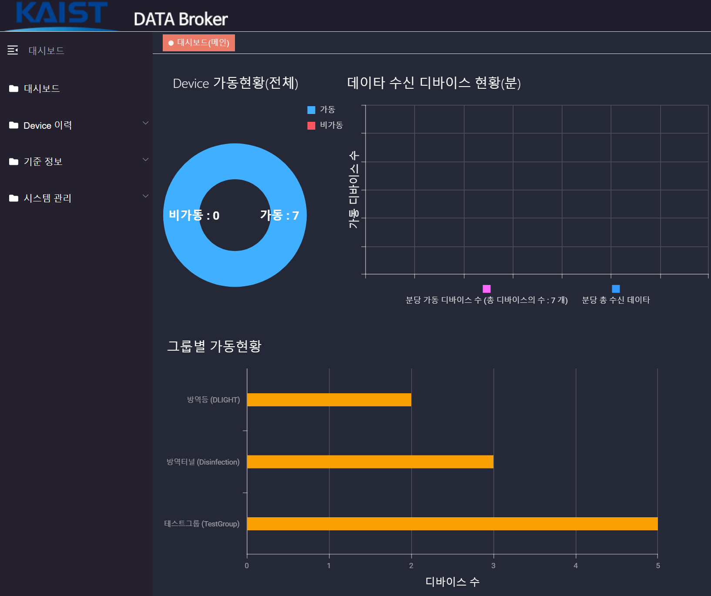
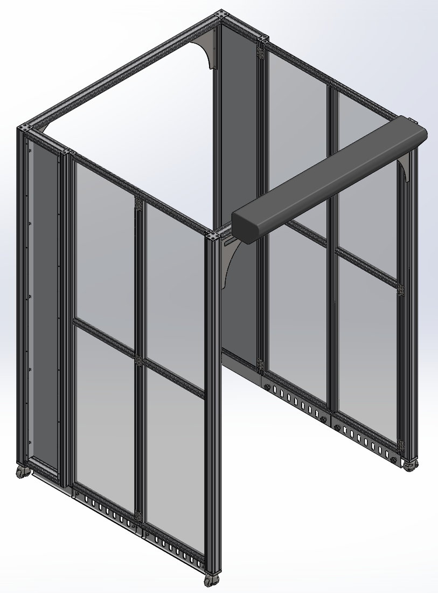
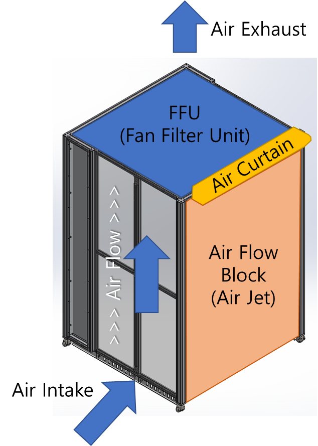

감염병의 곡선을 미리 그리다
실제 감염 곡선을 며칠씩 뒤늦게 따라가는 예측은, 정확해 보여도 쓸모가 없다. 곡선이 꺾이는 그 순간에 함께 반응하는 모델을 만드는 일 — 그 과정에서 부딪힌 함정과 판단의 기록이다.

어제 숫자를 베끼면 ‘정확한’ 모델이 된다
감염자 수 예측 모델을 처음 학습시키고 검증 그래프를 띄웠을 때, 나는 잠깐 안도했다. 예측 곡선이 실제 곡선과 거의 포개져 있었기 때문이다. 오차 지표도 작았다. 모든 것이 잘 돌아가는 것처럼 보였다. 그런데 두 곡선을 겹쳐 놓고 가로축을 따라 눈으로 훑던 어느 순간, 등골이 서늘해졌다. 예측 곡선은 실제 곡선과 ‘닮은’ 것이 아니라, 실제 곡선을 며칠만큼 오른쪽으로 ‘밀어 놓은’ 것이었다.
이것이 시계열 예측의 가장 음흉한 함정, 위상 지연(phase delay)이다. 직관적으로 말하면 이렇다. 내일의 감염자 수를 예측하라고 했을 때, 모델이 발견하는 가장 쉬운 전략은 “오늘 숫자를 그대로 내놓는 것”이다. 감염 곡선은 하루 사이에 급변하는 일이 드물기 때문에, 어제 값을 그대로 베껴도 평균 오차는 충분히 작다. 모델은 미래를 예측한 것이 아니라, 과거를 한 칸 늦게 따라 읽고 있었던 것이다.
방역 현장에서 이 지연은 치명적이다. 감염자 수가 급증하기 시작하는 변곡점은, 격리 병상을 늘리고 검역을 강화하고 인력을 재배치할지를 결정하는 순간이다. 그런데 모델이 그 변곡점을 며칠 늦게 ‘통보’한다면, 그 예측은 이미 일어난 일을 확인해 주는 사후 보고서일 뿐이다. 오차가 작다는 사실은 아무것도 보장하지 않는다. 곡선이 꺾이는 그 자리에서 함께 꺾여야 비로소 쓸모가 생긴다.
Chapter 2. 손실 함수가 게으름을 보상한다MSE는 왜 모델을 한 박자 늦게 만드는가
왜 모델은 이런 게으른 전략을 학습할까. 범인은 우리가 무심코 골라 쓴 손실 함수, 평균제곱오차(MSE)였다. MSE는 예측값과 실제값의 차이를 제곱해 평균한다. 곡선이 완만하게 움직이는 대부분의 구간에서는, 어제 값을 그대로 내놓는 ‘지연 복사’ 전략이 MSE를 가장 작게 만든다. 변곡점에서 큰 오차를 한두 번 내는 것보다, 모든 구간에서 한 칸씩 밀린 채 작은 오차를 꾸준히 내는 편이 평균적으로 유리하기 때문이다.
다시 말해, 우리가 모델에게 “전체 평균 오차를 줄여라”라고 요구하는 순간, 모델은 가장 안전한 평균 전략 — 즉 과거의 모방 — 으로 수렴한다. 손실 함수는 우리가 진짜 원하는 것(‘변곡점을 제때 잡아라’)을 말해 주지 않았고, 모델은 우리가 말한 대로(‘평균 오차를 줄여라’)만 충실히 따랐을 뿐이다. 모델은 정직했다. 게을렀던 것은 우리의 목적 함수였다.
그래서 모델링의 방향을 다시 잡았다. 핵심은 모델이 ‘평평한 구간’을 잘 맞히는 데 보상을 받는 구조에서 벗어나, ‘변화가 일어나는 순간’에 민감하게 반응하도록 유도하는 것이었다. 급격한 수치 변동과 변곡점에 더 큰 비중을 두는 방향으로 학습 신호를 재설계했고, 곡선의 ‘값’뿐 아니라 ‘기울기의 변화’를 함께 보도록 만들었다. 목표는 명확했다. 숫자를 더 정확히 맞히는 것이 아니라, 제때 맞히는 것이었다.
| 지표상 | 모델 A (지연 복사형) | 모델 B (변곡 반응형) |
|---|---|---|
| 평균 오차(MSE) | 매우 낮음 | 다소 높음 |
| 위상 지연(lag) | +3~4일 | 0~1일 |
| 변곡점 포착 | 며칠 뒤 확인 | 당일 반응 |
| 방역 의사결정 활용 | 사후 보고서 | 선제 경보 |
표의 수치는 경향을 보이기 위한 예시일 뿐이지만, 메시지는 분명하다. 지표상 ‘더 정확한’ 모델 A가, 현장에서는 ‘더 쓸모없는’ 모델이 될 수 있다. 우리가 끌어올려야 할 추론 성능은 오차의 낮음이 아니라 제때 반응하는 능력이었고, 평가 기준을 그렇게 바꾸자 비로소 모델이 올바른 방향으로 움직이기 시작했다.
Chapter 3. 역학조사관을 돕는 에이전트사람을 대체하지 않고, 사람의 일을 줄인다
과제의 다른 한 축은 역학조사관을 돕는 AI 에이전트였다. 처음 이 일을 맡았을 때 나는 ‘조사를 자동화하는 시스템’을 떠올렸다. 그러나 실제 역학조사관들의 업무를 들여다보면서 그 발상이 얼마나 순진했는지 깨달았다. 역학조사는 사람과 사람 사이의 일이다. 확진자의 동선을 묻고, 흩어진 기록을 대조하고, 모순되는 진술 사이에서 가장 그럴듯한 경로를 추론하는 — 고도로 맥락적이고 판단이 개입하는 작업이다.
그래서 에이전트의 설계 원칙을 바꿨다. 조사관을 대체하는 것이 아니라, 그들이 이미 하고 있는 작업 흐름 안으로 자연스럽게 끼워 넣는 것이었다. 조사관이 수집한 단편적 정보를 정리해 타임라인으로 구조화하고, 방대한 기록 속에서 연결 고리가 될 만한 단서를 먼저 짚어 주고, 비슷한 과거 사례를 검색해 참고 자료로 제시하는 — 판단은 사람이 하되, 그 판단에 필요한 재료를 빠르게 모아 주는 보조자였다.
이 관점의 전환은 단순한 겸손의 문제가 아니라 실용의 문제였다. 책임이 따르는 공공안전 영역에서, 최종 판단의 권한과 책임은 사람에게 남아 있어야 했다. AI가 “이 동선이 감염원입니다”라고 단정하는 것과, “이 동선이 다른 두 사례와 겹칩니다, 확인해 보시겠습니까”라고 제안하는 것은 전혀 다른 신뢰의 구조를 만든다. 후자만이 현장에서 받아들여졌다.
Chapter 4. 정확도와 유용성의 긴장공공안전에서는 ‘언제 알리는가’가 ‘얼마나 맞히는가’보다 중요하다
과제 전체를 관통한 긴장이 있다. 모델의 정확도 지표와 현장의 운영적 유용성은 같은 것이 아니다. 오히려 둘은 자주 충돌했다. 변곡점에 민감하게 반응하도록 모델을 조정하면, 평탄한 구간에서 작은 오경보(false alarm)가 늘어난다. 반대로 오경보를 줄이려 보수적으로 만들면, 정작 진짜 급증이 시작될 때 반응이 둔해진다.
이 트레이드오프는 순수하게 기술적인 문제가 아니라 가치 판단의 문제였다. 감염병 방역에서 ‘놓친 변곡점’의 비용과 ‘잘못된 경보’의 비용은 대칭이 아니다. 한 번 놓친 급증은 통제 불능의 확산으로 이어질 수 있는 반면, 한 번의 헛경보는 자원의 낭비와 신뢰의 마모로 끝난다. 그러나 헛경보가 반복되면, 현장은 결국 경보 자체를 무시하기 시작한다 — ‘양치기 소년’의 문제다. 그래서 민감도를 어디에 둘지는 통계가 아니라 정책적 합의가 결정해야 할 문제였다.
나는 이 단계에서 모델을 ‘정답을 내는 기계’가 아니라 ‘의사결정을 돕는 도구’로 다시 정의했다. 모델이 단일한 숫자를 던지는 대신, 시나리오와 불확실성의 폭을 함께 제시하도록 했다. “내일 N명”이 아니라 “현재 추세라면 급증 국면에 진입하는 신호가 보이며, 그 시점은 대략 며칠 안일 가능성이 높다”는 식의, 사람이 판단에 쓸 수 있는 정보로 바꾼 것이다. 추론 성능을 끌어올리는 일과, 그 성능을 신뢰할 수 있는 형태로 전달하는 일은 별개의 과제였다.
Chapter 5. 예측을 현장에 잇다곡선을 그리는 일에서, 사람을 걸러 내는 관문까지
예측 모델과 에이전트가 ‘언제·어떻게 대응할지’를 판단하는 두뇌였다면, 과제에는 그 판단이 실제로 작동하는 물리적 관문 — 지능형 방역 플랫폼 — 이 함께 있었다. 감염 곡선이 급증 국면을 가리킬 때, 그 신호가 닿아야 할 마지막 지점은 결국 사람들이 드나드는 출입구다. 예측이 아무리 정교해도 현장의 장비와 연결되지 않으면 사후 보고서에 그친다. 그래서 우리는 예측·판단의 계층을 방역터널과 그 관제 시스템에 잇는 데까지 시야를 넓혔다.


이 장비들이 개별적으로 작동하는 것만으로는 부족했다. 여러 방역터널과 계측 장비를 하나의 관제 화면에서 실시간으로 지켜보고 원격으로 제어해야, 예측이 가리키는 국면 변화에 현장이 통일된 속도로 반응할 수 있다. 이 글의 표지에 실린 KAIST DATA Broker 기반 IoT 관제 대시보드가 바로 그 역할을 맡았다 — 흩어진 장비의 상태를 한데 모으고, 예측·판단 계층에서 내려온 신호를 물리적 대응으로 옮기는 다리였다.
맺음말비정상성과 높은 책임 아래에서 예측한다는 것
이 과제가 내게 남긴 가장 큰 교훈은, 좋은 예측이란 작은 오차를 내는 것이 아니라 제때 옳은 신호를 주는 것이라는 점이다. 감염 곡선처럼 통계적 성질이 시시각각 변하는 비정상(non-stationary) 데이터에서, 과거의 평균을 잘 맞히는 능력은 미래를 잘 맞히는 능력과 무관할 수 있다. 오히려 과거에 충실할수록 미래에 둔감해진다. 모델은 우리가 설정한 목표를 지독하게 정직하게 따른다. 그러니 게으른 모델을 탓하기 전에, 우리가 무엇을 보상하도록 설계했는지를 먼저 의심해야 한다.
그리고 책임이 따르는 공공의 영역에서, 예측 모델의 가치는 그 정확도만으로 측정되지 않는다. 언제 알리는가, 누가 최종 판단을 내리는가, 헛경보의 신뢰 비용을 어떻게 관리하는가 — 이 모든 운영적 질문에 답하지 못하는 모델은, 아무리 정밀해도 현장에 들어가지 못한다. 곡선을 미리 그리는 일은 결국 기술의 문제이자, 동시에 판단과 신뢰의 문제였다.
참고
- 행정안전부, ‘신종 감염병 해외유입 예측 및 지능적 차단 기술개발’ 연구개발 과제 (수행 경험에 기반한 회고).
- 본문의 그래프·수치·표는 일반적 경향과 개념을 설명하기 위한 예시이며, 실제 과제의 구체적 결과·지표를 그대로 옮긴 것이 아니다.